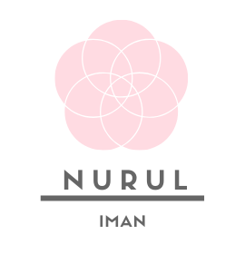

Assalamualaikum and Hello! My name is Nurul Iman and you can call me Iman. I was aspire to share my hobby with as many as I can whilst in the same time I will disseminate this passion in baking as the joy that I hold dearly in my heart. During this COVID-19 pandemic, I did manage to bake more cakes and desserts to fill my free time to enhance my skills on baking. Kindly visit my gallery to see some of my baked goods.
© Nurul Iman 2020